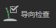

可以确保当前集合和描述不存在导向错误。
选择“全部”(all)以针对当前集合中所有描述检查导向。选择“当前”(current)以仅针对当前描述使用“导向检查”(Guide Check)。
显示分段之间无长度的导向的 ID。无长度的导向会导致插值错误。
显示相同的导向的 ID。相同的导向会占用多边形网格中的相同空间。例如，使用“曲线到导向”(Curves to Guides)工具时，两条曲线可能会占用相同的空间。相同的导向会引起问题，因此其中一个导向必须被删除。
显示具有与其他导向占用相同位置的基础的导向 ID。类似于相同的导向，其中一个导向需要被删除。
单击“删除”(Delete)以移除“导向检查”(Guide check)工具标志的导向。